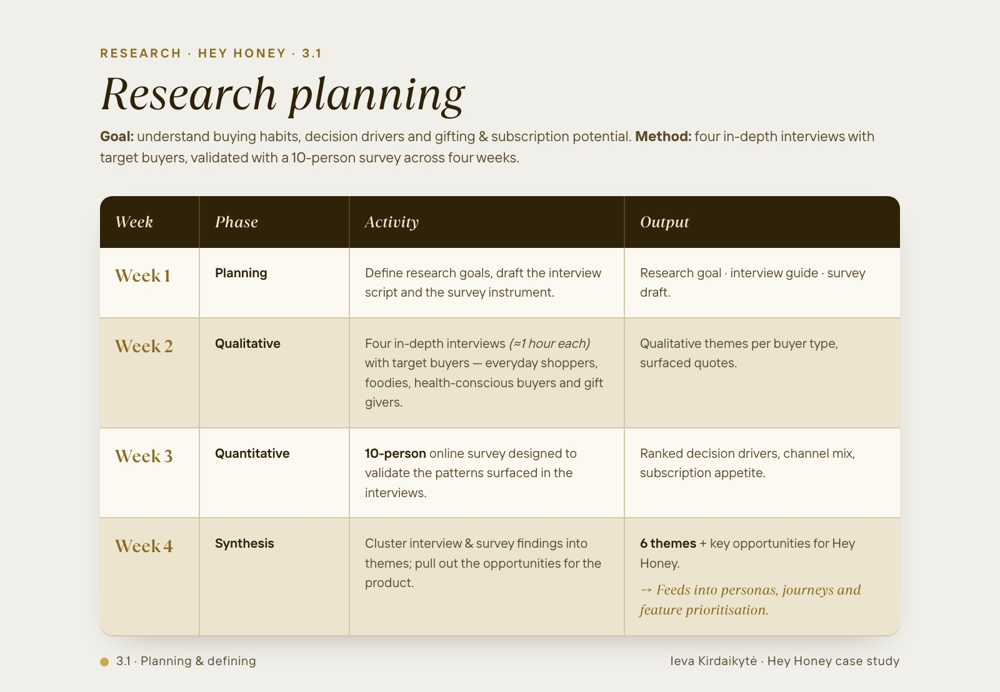
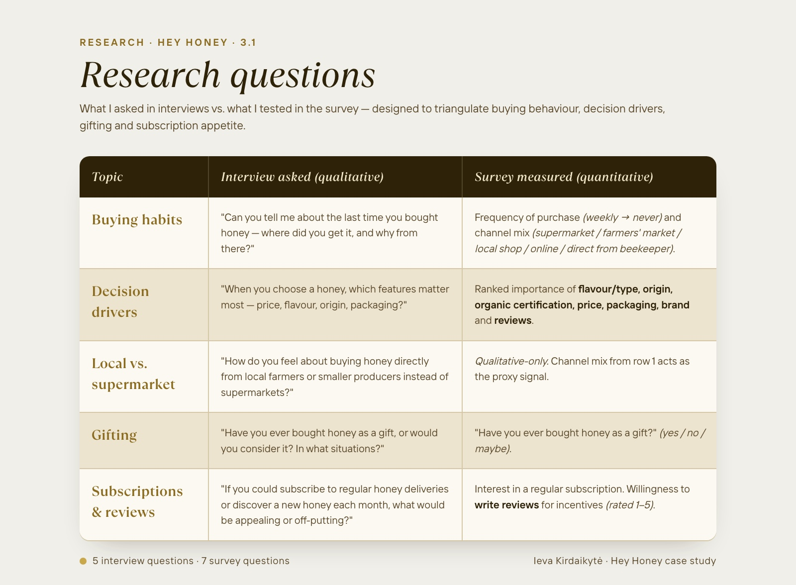
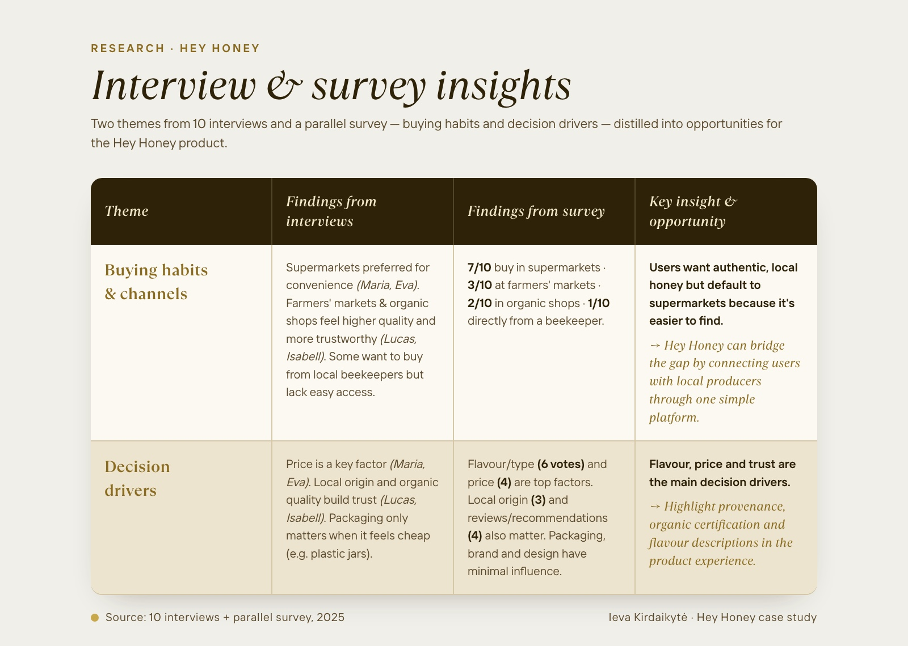
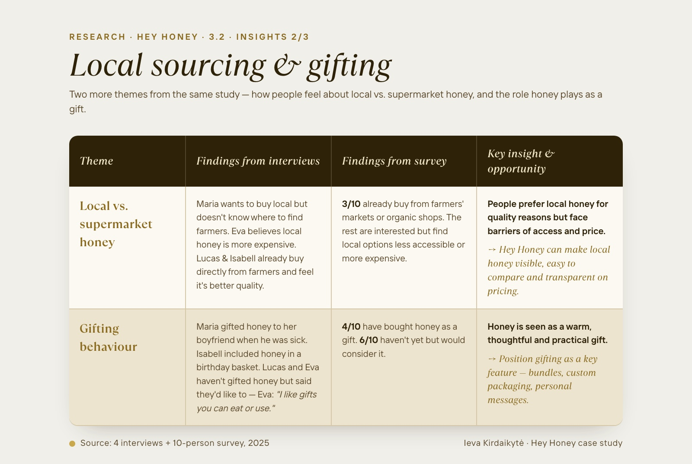
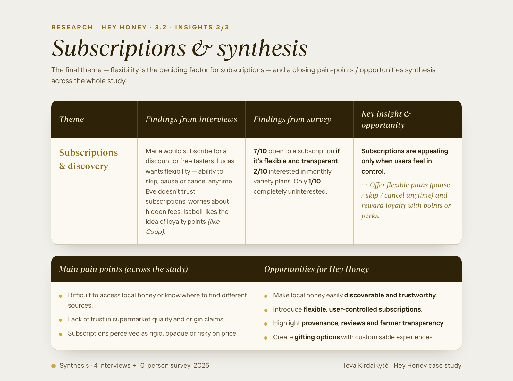

Hey Honey
A curated mobile-first marketplace connecting consumers with local beekeepers, discover, subscribe, gift.
Make local honey easy to find, fair to buy, and worth subscribing to.
Hey Honey is a mobile-first marketplace that connects consumers with local beekeepers, making it easy to discover and buy high-quality honey, and giving farmers a fair, digital-first sales channel.
Users can filter by honey type, subscribe to regular deliveries, purchase gifts, and explore weekly recipes. Farmers benefit from increased visibility and a transparent route to market, without depending on supermarket shelf space.
What "good" looks like in year one.
From browse to purchase, the headline metric for marketplace health.
Recurring revenue is what turns a marketplace into a sustainable business.
Honey is a thoughtful, low-effort gift, designed for an explicit gifting flow.
Reviews build trust between strangers, the engine of two-sided marketplaces.
Supply density determines whether buyers find what they came for.
Switzerland-first, with the option to expand to neighbouring producer regions.
Strong storytelling, weak product features.
Strong story, rigid subscription.
Clear provenance, certifications, simple subscription flow, clean catalogue. Weak on filters, reviews, and flexibility. Users can't pause or skip easily.
Authentic voice, limited e-commerce.
A family-run shop with great provenance storytelling. Missing product descriptions, no reviews, no filters or subscription, and German-only.
Tell the story and ship the features.
Hey Honey can win by combining authentic farmer storytelling with the product features modern shoppers expect, flexible subscriptions, reviews, and search that actually finds things.
Four weeks, two methods, one direction.
A mixed-method study: four in-depth interviews to surface motivations, then a 10-person survey to validate which patterns mattered most. Synthesis at the end turned six themes into product opportunities.
Questions designed to triangulate buying behaviour.
Five interview prompts paired with seven survey measures — across buying habits, decision drivers, local sourcing, gifting, and subscriptions. Each question existed to confirm or challenge a hypothesis about how people actually buy honey.
Convenience wins by default, local loses for being hard to find.
Most participants buy honey at the supermarket out of habit. Many would prefer local options if local options were as easy to access. Price, flavour and origin drive decisions — but only when discovery makes them available.
Local quality wins minds; gifting is the surprise opportunity.
People prefer local honey for quality but face barriers of access and price. Gifting is more common than people admit — practical, warm, and worth a dedicated flow rather than a checkout afterthought.
Subscriptions sell only when users stay in control.
Seven in ten are open to subscribing — if it's flexible and transparent. Pause, skip, cancel: non-negotiable. Six themes converge into four product opportunities: discoverability, flexibility, transparency, and gifting.





Three buyers, one product, designed to work for all of them.
Everyday Ella
Values convenience and affordability. Buys honey at the supermarket but would prefer local options if they were easier to access. Won't trade speed for ideology.
Conscious Luca
Seeks authentic, local honey and wants transparency about origin. Open to subscriptions if flexible, values the relationship with the farmer as much as the product.
Gift Isabell
Enjoys giving meaningful, local gifts. Looks for elegant packaging, personalisation, and the option to ship directly to the recipient. Comes back for occasions.
Three journeys, one for each persona, mobile-first.
Mapped three key journeys, product purchase, subscription setup, and gift purchase, visualised from discovery to checkout, identifying emotional peaks, drop-offs, and improvement opportunities.
Login is added before checkout to support order tracking and personalisation, while still allowing guest checkout for first-time buyers. Mobile flows are optimised for speed (progressive disclosure, inline modals); desktop flows provide more context (side filters, one-page checkout, detailed farmer profiles).
Dark, nature-led, glass-touched.
The visual language combines a dark, nature-inspired aesthetic with glassmorphism UI, modern and immersive, while letting the product itself stay the hero of every screen.
Dark backgrounds create strong contrast for golden honey illustrations. Honeycomb patterns, dripping honey shapes, and warm amber tones reinforce the natural identity. Glassmorphic surfaces, semi-transparent cards, soft blurs, subtle gradients, sit on top, giving cards and CTAs depth without competing with photography.
The homepage follows a vertical storytelling structure: brand → product → people. The same hierarchy guides the rest of the app, so trust accumulates the deeper users go.
A simple, trustworthy first launch.
- Must haveFilterable catalogue, product detail, cart, checkout, "Subscribe & Save" with flexible management, ratings & reviews, farmer profiles.
- Should haveGifting, weekly recipes, order tracking, account & preferences.
- Could haveLoyalty programme, advanced personalisation, taste-led recommendations.
- Won't have (yet)Marketplace seller dashboard, B2B wholesale, multi-region shipping.
The MVP focuses on a simple, trustworthy shopping and subscription experience. Reviews, ratings, and farmer profiles support transparency and trust from day one.
Gifting, recipes, and order tracking are scoped as "Should Have", meaningful, but not load-bearing for the launch. Loyalty programmes and advanced personalisation are mapped for a later phase, once we have enough live data to design them well.
Three levels deep, never more.
A clear, intuitive IA with no more than three levels of hierarchy. Main nav: Shop, Subscriptions, Gifts, Profile, About. Support and FAQs in the footer.
Mobile prioritises essential actions via a top tab bar. Desktop provides broader context with dropdown menus and cross-links between farmers, regions, and honey types, turning the IA into a quiet discovery tool.